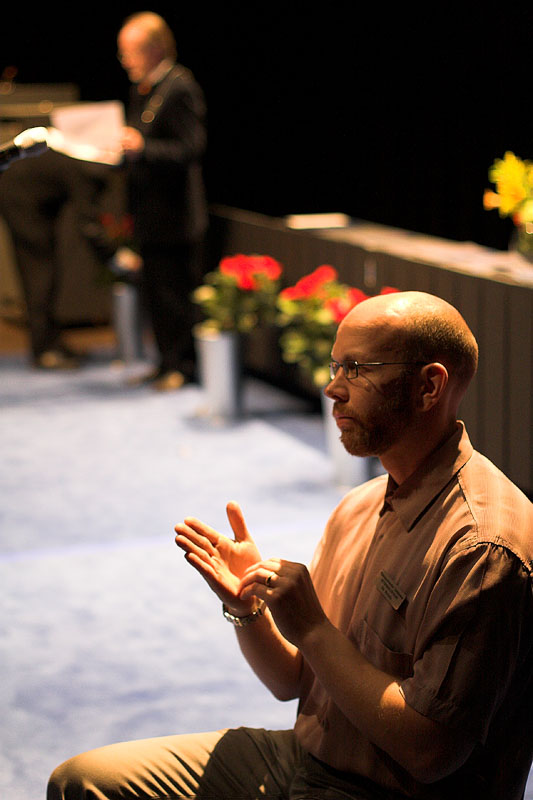

1. Interpreters are valuable in that they allow communication and understanding to take place where it otherwise would not.
 The hearing and speech impaired use interpreters to communicate with people who do not have these impairments and vice versa. Countries need to communicate with each other even when they do not speak the same language. Travelers and immigrants need interpreters in airports and hospitals to help others understand their needs and aid themsleves in understanding the new world around them. Although interpreters may not directly affect the everyday life of many people, they make a big difference to those who around them. Such interpreters can be found throughout history, each doing things that cause them to be remembered ceturies later.
2. Interpreters, or just bilinguals in general, are not confined to any one job market.
If they have no job opportunities in the country of one language (which is highly unlikely), they can find other opportunies in another country. Not only is there a bigger job market: It is easier to get a job in many fields of work by having the sought-after skill of speaking more than one language. On average, interpreters and translators make $44,190 per year, or $21.24 per hour. Most people enter this field of work with a bachelor's degree. I'd say these are pretty good specs.
3. Travel can be a part of the job.
If you like to travel, well hey... it can be a part of the job! Eating new foods, seeing different trends and fashions, and learning foreign mannerisms can be fun. Traveling allows you to experience other cultures, gain a better world-view, and perhaps even make new friends (on your own time, of course).
Of course, where there are 'pros', there are 'cons' as well...
| pros | cons |
|---|---|
|
|
...but the 'pros' of this job outweigh the 'cons' by far. If you are thinking about becoming an interpreter, make your own list and do what's best for you.
The interpretation of dreams is a great art.
-Paracelsus
The interpretation of dreams is the royal road to a knowledge of the unconscious activities of the mind.
-Sigmund Freud
Language is a process of free creation; its laws and principles are fixed, but the manner in which the principles of generation are used is free and infinitely varied. Even the interpretation and use of words involves a process of free creation.
-Noam Chomsky